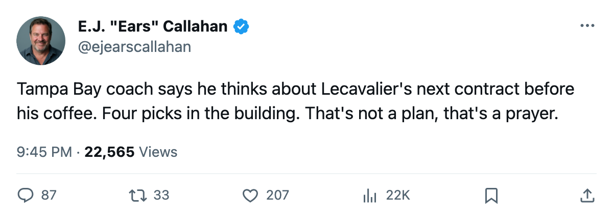

Contract-Year Watch: Tampa Bay Owns 4 Picks. Their Best Center Has 1 Year Left and 100 Morale.
The Lightning hold the fewest draft assets in the league besides Toronto. Their 25-year-old center scored 10 points in 7 games at $2.60M. His coach told The Tunnel he thinks about the extension before coffee.
 E.J. "Ears" CallahanInsider · The Hot Stove
E.J. "Ears" CallahanInsider · The Hot Stove

Extension talks not yet public; coach confirms he thinks about it daily

 Vincent Lecavalier89 [560] is the oldest question in Tampa Bay's building, and it started the moment his contract year opened. The 25-year-old center carries a Book grade of 86, a $2.60M salary, 1 year remaining, and 10 points in 7 games with a morale reading of 100.
Vincent Lecavalier89 [560] is the oldest question in Tampa Bay's building, and it started the moment his contract year opened. The 25-year-old center carries a Book grade of 86, a $2.60M salary, 1 year remaining, and 10 points in 7 games with a morale reading of 100.  Tampa Bay Lightning holds 4 draft picks across 5 rounds, the second-fewest of any club after
Tampa Bay Lightning holds 4 draft picks across 5 rounds, the second-fewest of any club after  Toronto Maple Leafs's 3.
Toronto Maple Leafs's 3.
Michael Burt told The Tunnel's Jan Kowalczyk after the Oct 24 game that the extension sits on his desk daily. "Every day. You've got a 25-year-old center at $2.60M, an 86 in the Book, and a year on the clock. The moment that number moves up six, the moment the League Scouting Bureau edition changes and he's in the high 80s, the money changes a lot."
That is the league-source read: the market for Lecavalier resets with every Bureau edition. If the Book climbs, so does the price. Burt said he would not sit Lecavalier down mid-run: "I want that staying exactly where it is through March." The run is a division lead. Tampa Bay sits at 11 points, 2-0-3 with 3 overtime losses, and leads the Southeast.
Four picks and no margin
The draft-capital table is where this stops being a feel story. Tampa Bay has 4 picks. Every other club in the league has 5 or more except Toronto. If Lecavalier walks as an unrestricted free agent next July, the Lightning cannot replace him through the draft. They cannot package picks for a rental, because they don't have extras. Their 3rd-round pick already belongs to Colorado.
Club morale reads 97.6, the highest in the league, but the room is also running $59.79M in payroll against $30.45M in revenue per game. A raise for Lecavalier compounds that gap.
The per-point math on the sheet: Tampa Bay runs at $5.44M a point, the 4th-best rate in the league. Pittsburgh is cheapest at $4.89M, Nashville second at $5.14M, Vancouver third at $5.15M. All three of those clubs also carry contract-year players. All three face the same fork: extend or sell.
Tampa Bay's problem is narrower. Pittsburgh has Mario Lemieux and 5 picks. Nashville has  David Legwand88 at $8.37M but also 5 picks and a 91-rated goaltender on $0.90M. Tampa Bay has Lecavalier and 4 picks and a division lead and a coach who admits the phone hasn't rung yet.
David Legwand88 at $8.37M but also 5 picks and a 91-rated goaltender on $0.90M. Tampa Bay has Lecavalier and 4 picks and a division lead and a coach who admits the phone hasn't rung yet.
"I let him play through it," Burt said. "He's got 7 in 5, he's got his legs, morale is 100. I want that staying exactly where it is."
The calendar has 143 days until the trade deadline. After that, the only lever left is the one the coach holds in his hands every morning.
